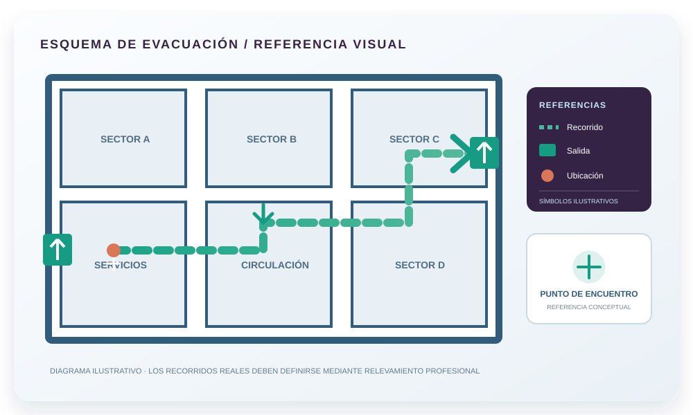

Estudio de Seguridad e Higiene
Conocé en qué consiste, cómo puede desarrollarse el trabajo y qué aspectos conviene revisar. Los requisitos concretos dependen de la actividad, el inmueble y la jurisdicción.
¿Qué es y por qué me lo piden?
Sabemos que el lenguaje técnico y legal marea. Acá te lo contamos claro, para que entiendas de qué se trata antes de dar el primer paso.
¿Qué es el Estudio de Seguridad?
Es un informe técnico que verifica que tu local cumple las condiciones de seguridad para recibir público (salidas, incendios, instalaciones, etc.). Debe estar firmado por un profesional habilitado en Higiene y Seguridad.
¿Cuándo lo necesito?
Cuando la actividad, el inmueble o la autoridad competente requieren documentación técnica de seguridad. El alcance debe confirmarse para cada caso.
¿Quién lo firma y avala?
Un profesional matriculado. La intervención profesional y, cuando corresponda, el visado ante COPAIPA se determinan según el tipo de documentación y los requisitos aplicables.

Esquema ilustrativo. Cada establecimiento requiere evaluación y documentación específica.
Del relevamiento a la firma
El Estudio de Seguridad es un proceso técnico de evaluación. El alcance, las verificaciones y la documentación se definen según las características del establecimiento y los requisitos que correspondan.
Relevamiento
Inspección técnica del local, instalaciones y archivo fotográfico.
Diagnóstico
Detectamos desvíos respecto de la normativa vigente.
Adecuaciones
Te informamos los desvíos detectados y las medidas que correspondan.
Firma
Verificado el cumplimiento, firma el profesional.
Visado COPAIPA
Gestión del visado y presentación ante el organismo que corresponda, cuando aplique.
Un informe técnico completo, no un trámite de papel
Según el alcance del trabajo y la documentación técnica aplicable, el estudio puede contemplar:
Datos del local
Ubicación catastral, coordenadas, tipo de actividad, cantidad de personas y balance de superficies.
Descripción e instalaciones
Características constructivas, instalación eléctrica y especiales (gas, calderas, compresores) con archivo fotográfico.
Carga de fuego
Sectorización, materiales por sector y cálculo de carga de fuego para definir la protección necesaria.
Medios de escape
Factor de ocupación, cálculo de vías de escape, anchos, salidas y tiempo de evacuación.
Roles y procedimientos
Organización ante emergencias, comunicación, controles preventivos y capacitación.
Documentación final
Planos normalizados (escala 1:100, normas IRAM), recomendaciones y doble firma profesional/propietario.
Estructura obligatoria según Resolución COPAIPA N° 116/12 · Planos según Res. 131/09 · La documentación final se prepara según los formatos y requisitos vigentes que correspondan al caso.
¿Tu local está en condiciones?
Marcá los aspectos que identificás en tu establecimiento. El resultado es una referencia orientativa para conversar con un profesional; no mide el cumplimiento normativo.
Instalación eléctrica
Protección contra incendios
Evacuación y salidas
Señalización de seguridad
Tu nivel estimado de cumplimiento
Marcá los ítems que tu local ya cumple para ver tu estimación.
💬 Consultar mi caso con LOOKBENEsta autoevaluación es orientativa y no reemplaza el relevamiento profesional del caso concreto. El resultado no constituye certificación ni garantía de aprobación. La verificación definitiva la realiza el profesional actuante y el visado corresponde a COPAIPA.
Respaldados por la normativa vigente
Nuestro trabajo se enmarca en la legislación provincial y nacional. Transparencia total sobre en qué nos basamos.
Ley Provincial N° 7467
Sancionada el 20/09/2007. Establece un marco provincial vinculado con la verificación de condiciones de higiene y seguridad. Su aplicación concreta debe analizarse según el establecimiento y la actividad.
- Art. 1: adopta las condiciones de la Ley Nacional 19.587 para proteger a las personas.
- Art. 2: el Estado conviene con los Consejos Profesionales (COPAIPA) la verificación de la documentación.
- Art. 3: las Municipalidades ejercen la policía de obra sobre lo verificado.
Ley 19.587 + Dto. 351/79
Ley marco nacional y su decreto reglamentario, base técnica de todo el estudio (incendios, evacuación, instalaciones).
- Anexo VII (arts. 160-187): protección contra incendios, sectores y carga de fuego.
- Define condiciones de instalaciones eléctricas, salidas y señalización.
- En Salta se complementa con la Ley 5556 de Sismorresistencia.
Verificá todo por tu cuenta
Los organismos que intervienen en la habilitación y la normativa de tu local.
COPAIPA — Ley 7467
Texto oficial completo de la ley en el Consejo Profesional que visa la documentación.
Ver la ley oficial →COPAIPA — Sitio oficial
Consejo Profesional de Agrimensores, Ingenieros y Profesiones Afines de Salta.
Ir al sitio →Municipalidad de Salta
Portal oficial donde se gestiona la habilitación comercial de tu local.
Ir al portal →Lo que más nos consultan
¿Contratarte garantiza que me habiliten?
¿Qué pasa si mi local no cumple algo?
¿Quién aprueba finalmente el estudio?
¿Las adecuaciones las hacen ustedes?
¿De qué depende el costo del estudio?
¿Qué necesitan de mí para empezar?
¿Atienden consultas de otras provincias?
¿Necesitás asesoramiento en Higiene y Seguridad?
Escribinos con tu actividad y ubicación. Evaluamos tu necesidad y la modalidad de atención posible.
💬 Consultar ahora sin cargo